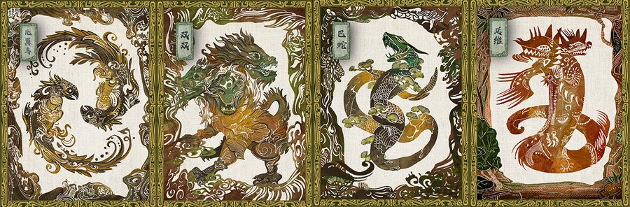
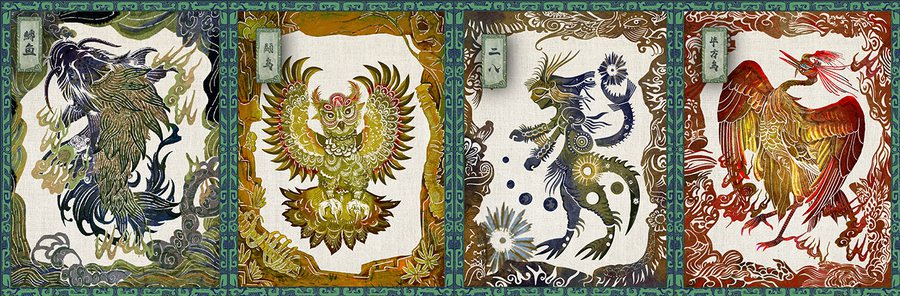

PROJECT 03
山海纪
Shanhaijing TRPG · Tabletop Role-Playing Game
项目角色：世界观构建 · 玩法规则设计 · 神兽与角色美术 —— 以山海经神话为母题的桌面角色扮演游戏， 单人沙盒剧情冒险，探索「纸面桌游 × 数字动态」的融合表达。
项目角色：世界观构建 · 玩法规则设计 · 神兽与角色美术 —— 以山海经神话为母题的桌面角色扮演游戏， 单人沙盒剧情冒险，探索「纸面桌游 × 数字动态」的融合表达。
山海经是中国神话的原点之一，但其神兽与叙事长期停留在典籍与插图中， 大众接触它的方式往往是「阅读」，而非「进入」。 毕业设计选择了 TRPG（桌面角色扮演游戏）——一种天然适合承载叙事、让玩家亲身「住进」神话世界的媒介。
项目目标不是做一张神兽图鉴，而是构建一个可以玩的山海世界： 玩家以单人沙盒的方式开展剧情冒险，在规则、角色与卡面的共同作用下，与神话产生真实的互动。
调研结论指向一个清晰的设计决策：皮影造型 × 动态粒子—— 用静态的「纸面桌游」承载动态的「数字视觉」，让传统媒介与新媒体在卡面上直接对话。



「山海纪」本身是物理桌游，但其视觉系统内置了数字动态层，实现方式：
「山海纪」是一套完整的文化 IP 化实践：把山海经从典籍翻译成可以玩的系统、可以看的卡面、 可以传播的宣传片。它验证了我对「传统 × 数字」融合表达的早期思考—— 这种思考直接延续到了后来的 AI 汉唐妆造与兵马俑 IP 项目中。
返回作品集首页